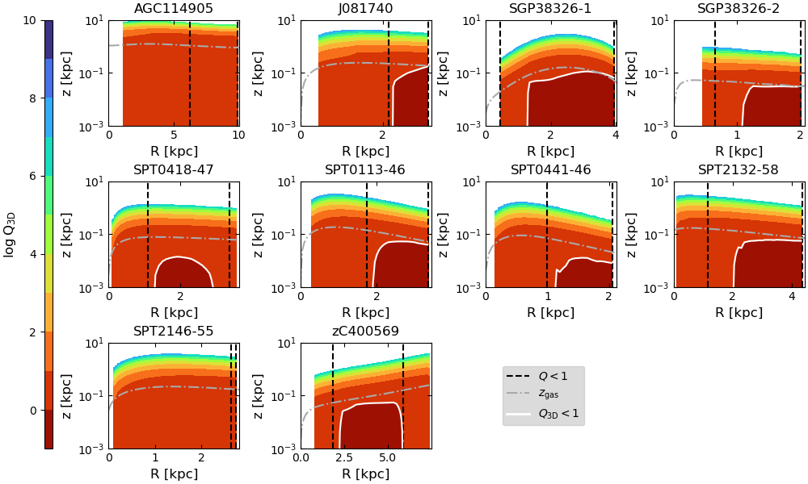
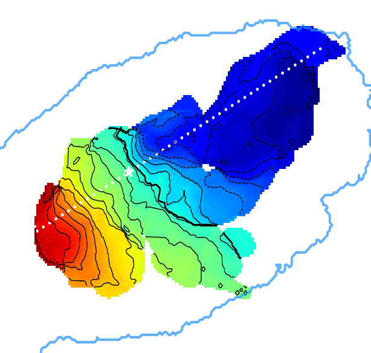
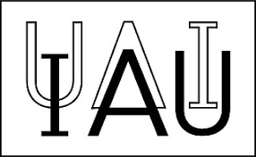
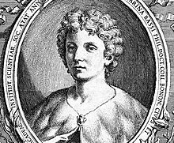
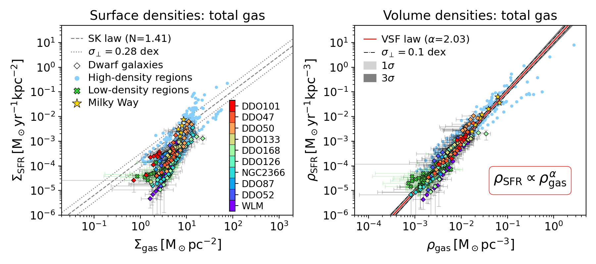
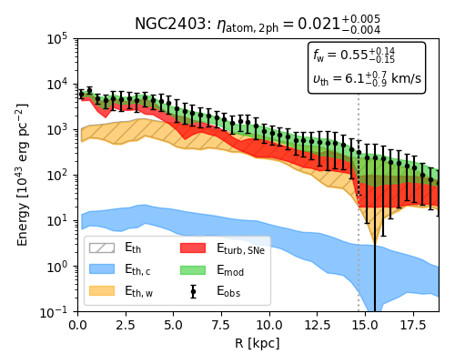

Cecilia Bacchini
DARK fellow
Niels Bohr Institute - University of Copenhagen
Welcome to my personal website! I am an astrophysicist working on the formation and evolution of galaxies.
In September 2020, I obtained my PhD from the Kapteyn Astronomical Insitute of the University of Groningen (The Netherlands) and the Department of Phyiscs and Astronomy of the University of Bologna (Italy), where my PhD survisors were prof. Filippo Fraternali and prof. Carlo Nipoti .
Then, I started a 3-year postdoc at the Astronomical Observatory of Padova of the National Institute for Astrophysics (INAF), where I worked on jellyfish galaxies in the ERC-funded collaboration GASP (GAs Stripping Phenomena in galaxies with MUSE) led by dr. Bianca Poggianti .
Since October 2023, I am a postdoc fellow at the DARK section of the Niels Bohr Institute, University of Copenhagen. I investigate the physical mechanisms that regulate star formation in galaxies over cosmic epochs, as well as their dynamical evolution and scaling relations.
If you want to know more about my scientific activity, explore this website!
My research interests revolve around the formation and evolution of galaxies, including:
- Kinematics and dynamics of baryons in galaxies
- Structure of the interstellar medium
- Star formation from sub-kpc to galactic scales
- Gas turbulence and stellar feedback
- Gas accretion and the baryon cycle of galaxies
- Scaling relations of baryons and dark matter
Highlights

Disc instability in 3D
In this paper, I use a new, 3D instability criterion to search unstable discs in star-forming galaxies up to 12 Gyrs ago.
I find that, thanks to the stabilising effect of the gas disc thickness, instability is not pervasive even in early discs.

Molecular gas kinematics in jellyfish galaxies
In this paper, I present kinematic models of the molecular gas in jellyfish galaxies undergoing ram pressure stripping. Not the easiest study case, but ideal to study kinematic perturbations in dense environments.

PhD thesis awards!
My PhD thesis was awarded the 2020 IAU PhD prize for the best thesis in Interstellar Matter and Local Universe and the Gratton Prize for the best Italian thesis in 2018-2020.

"Laura Bassi series" colloquium
I was an invited speaker for the colloquia series, which showcases the research work of young women in Astronomy to honor Bassi's legacy.
Laura Bassi was the first woman university professor in the western world, teaching physics at University of Bologna in the XVIII century, when women were not allowed to pursue higher education or learned professions.

The volumetric star formation law
In this series of papers, I discovered a new star formation law linking the volume densities of the cold gas and the star formation rate, which holds from dwarf to large spirals (even in the Milky Way!). This indicates that the break of the Kennicutt-Schmidt relation at low densities is due to the projection effect of the disc thickness, rather than to a density threshold for star formation.

Supernova-driven turbulence
In this paper, I show that supernova feedback is the main driver of the cold gas turbulence in galaxies.
The origin of turbulence had been an open question for years, as even the most likely and energic driver, supernova feedback, seemed insufficient. I show that supernovae can make it, as the gas disc flaring slows down the turbulence dissipation.
{kind=link}
{kind=link}
{kind=link}
{kind=link}